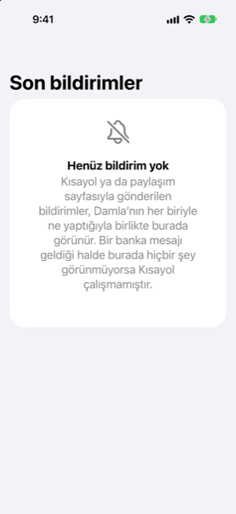

Kılavuz › Otomatik kayıt
Damla'nın yok saydıkları ve bir bildirimi geri alma
Reklamlar, limitler, hatırlatıcılar ve kodlar atlanır; yanlış bir kararı nasıl geri alırsınız.
Damla bir banka mesajını ancak paranın gerçekten hareket ettiğini söylüyorsa kaydeder. Reklamlar, limit bildirimleri, hatırlatıcılar ve tek kullanımlık kodlar atlanır. Damla'nın işlem yaptığı her şey tek bir ekrandan geri alınabilir.

Ne zaman kullanılır
- Bir mesaj Damla'ya ulaştı ama hiçbir şey değişmedi ve nedenini bilmek istiyorsunuz.
- Damla işlememesi gereken bir mesaja işlem yaptı ve onu geri almak istiyorsunuz.
- Az önce bir Shortcut kurdunuz ve Damla'nın her mesajla ne yaptığını görmek istiyorsunuz.
Damla neyi atlar
Bu tür mesajlar asla kaydedilmez:
- Tek kullanımlık ve onay kodları ("otp", "verification code", "do not share"): atılır ve mesaj saklanmaz — ne defterlerinizde, ne günlükte, ve hiçbir zaman diske yazılmaz.
- Reklamlar ve teklifler: "cashback", "offer", "rewards", "congratulations", "apply now", "valid until" gibi ifadeler.
- Limit ve faiz bildirimleri: "limit has been", "limit is set", "limit increased", "interest rate".
- Hatırlatıcılar: "reminder", "don't forget", "kindly pay" ve "pay by" gibi ifadeler.
- Hareket etmemiş tutarlar: "over", "above", "more than", "exceeding", "up to" ya da "minimum spend" hemen ardından yazılmış bir sayı, ya da "if you" veya "you can" üzerine kurulu bir cümle. Bu bir teklif ya da limittir, bir harcama değil.
- Gerçekleşmeyen bir işlem: declined, unsuccessful, failed, rejected, insufficient.
- Parayla ilgili hiçbir şey içermeyen mesajlar, örneğin bir teslimat bildirimi: atılır, saklanmaz, günlüğe yazılmaz.
Para ile ilgili bir mesaj atlandığında Yok sayıldı olarak işaretlenir. Günlük satırı mesajın ilk birkaç kelimesini taşır, asla tüm mesajı değil; böylece yanlış bir karar sonradan görülebilir. Her atlama bir satır bırakmaz: telefonunuzun kilidi açıkken bir Shortcut'ın devrettiği ve Damla'nın attığı bir mesaj hiçbir biçimde kaydedilmez. Telefon kilitliyken gelen bir mesaj, Damla'yı bir sonraki açışınızda okunur ve bu okuma saklanır.
Atlmayanlar
faturanız hazır diyen bir mesaj beklenen bir fatura olur, harcama değil. Sonradan onu ödeyen kart ya da banka tahsili işlemdir. Bir kart ekstresi bildirimi (toplam borçla birlikte asgari ödeme) ekstre olarak okunur ve incelemenizi bekler. Damla'nın zaten not ettiği bir fatura için gelen hatırlatıcı ikinci bir tane eklemez: o faturanın son ödeme tarihini tazeler ve satır Zaten not edilmiş bir faturanın hatırlatıcısı der. Net olmayan her şey Gelen kutusunda tek dokunuşu bekler. Bir yükümlülük yaratan hiçbir şey siz onaylamadan eklenmez.
Ne olduğunu kontrol etme
- Ayarlar'ı açın, Banka mesajları ve ekstreler'e, ardından Son bildirimler'e dokunun.
- Listeyi okuyun. Her para mesajı ne yapıldığını ve nedenini gösterir: Eklendi, Gelen kutusunda bekliyor, Zaten kaydedilmiş, Yok sayıldı ya da Not edildi, henüz kaydedilecek bir şey yok, artı ne kadar önce olduğu. Liste en son 50 satırı tutar.
- Bir para mesajı ulaştıysa ama listede hiçbir şey yoksa, Shortcut çalışmamıştır. Anahtar kelimeyi, Hemen Çalıştır olarak ayarlandığını ve metnin mavi Shortcut Input hacini olduğunu kontrol edin.
Bir bildirimi geri alma
- Son bildirimler'de, Damla'nın işlem yaptığı bir bildirimi sağa kaydırın ve Geri al'a dokunun.
- Onaylayın. Geri alınanlar:
- Eklenmiş bir bildirim: eklediği işlem silinir. O işlem bir faturayı kapatmışsa, fatura yeniden borç olur. - Not edilmiş bir bildirim: not ettiği fatura unutulur.
- Satır, önünde "Geri alındı" olduğu hâlde listede kalır; böylece ne olduğunu görürsünüz.
Geri al yalnızca Damla'nın kendi başına işlem yaptığı ve eylemin hâlâ geçerli olduğu satırlarda görünür: defterlerinizde hâlâ bulunan, eklediği bir işlem ya da hâlâ açık olan, not ettiği bir fatura. Zaten kaydedilmiş, Yok sayıldı ya da Gelen kutusunda bekliyor olarak işaretlenmiş satırlarda geri alınacak bir şey yoktur.
Ters yöne kaydırmak Sil'i sunar; bu yalnızca günlük satırını kaldırır. Tümünü temizle listeyi boşaltır; zaten eklenmiş işlemler kalır.
Faydalı bilgiler
İlgili
Anlaşılmayan ya da eksik bir şey mi var? support@raveniq.ai adresine yazın ve hangi sayfa olduğunu belirtin.